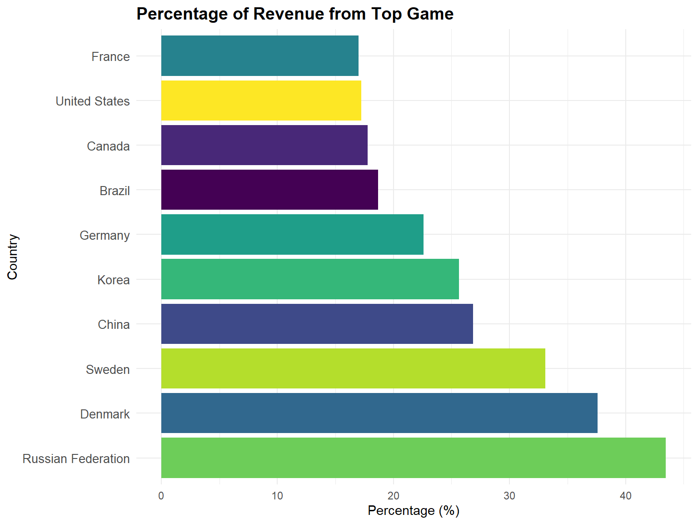
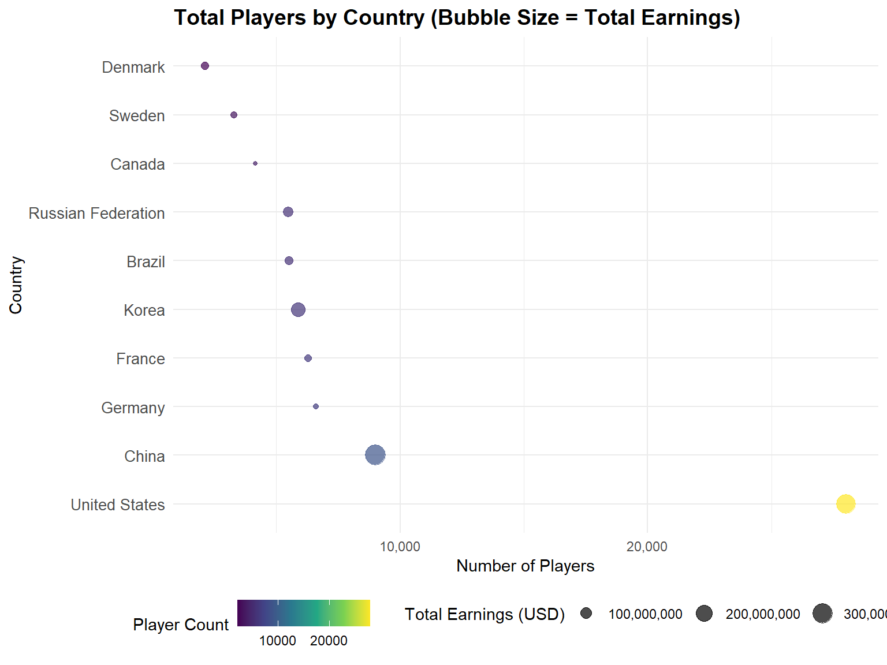
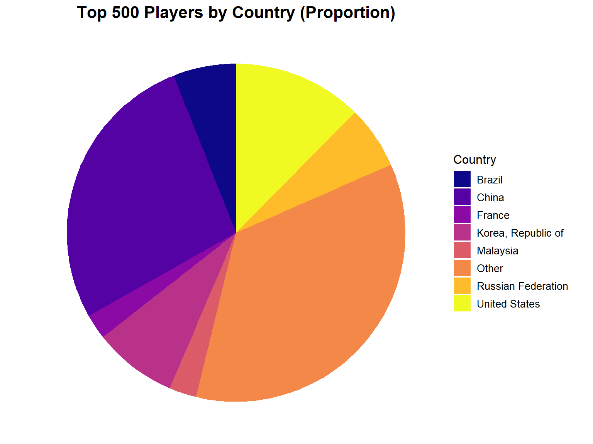
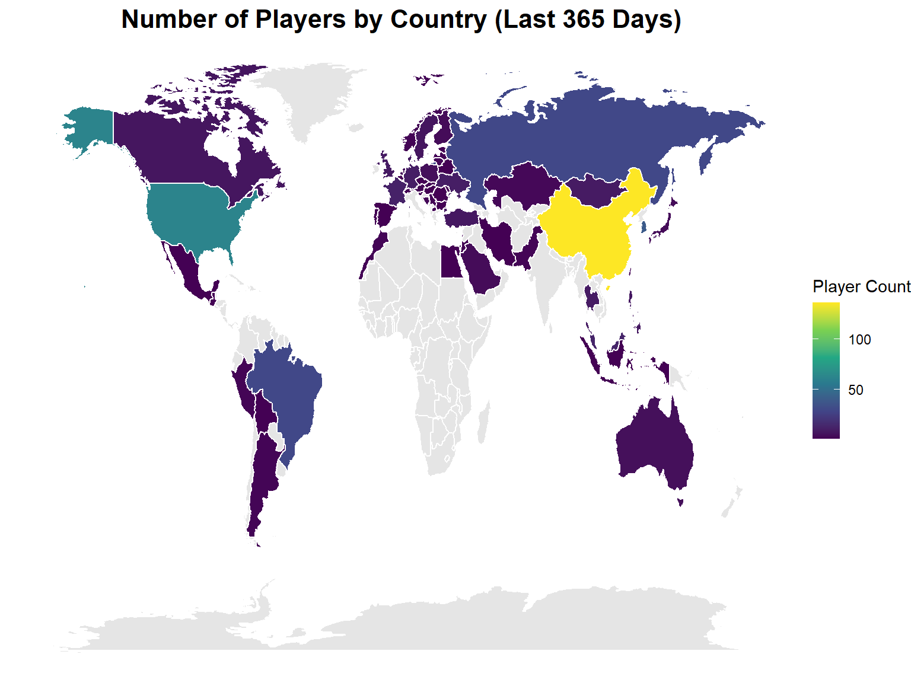

title: “Esport Report” date: “2024-12-02” output: github_document
library(rvest)
library(dplyr)
library(tidyverse)
library(httr)
library(ggplot2)
library(tidyr)
library(maps)
library(knitr)
library(viridis)Project Name: Play by Numbers: Esports Trends Unveiled
Project Members: Xun Sun (xs2569), Xinghao Qiao (xq2241), Huachen Shan (hs3478), Kanye Xu (kx2224), Fangchi Lu (fl2714)
Motivation
This project aims to analyze the evolving landscape of e-sports, focusing on patterns in player earnings and engagement strategies across demographics and game types.
Key Questions
- Earnings Trends and Impact:
- What are the key trends in esports earnings across players, countries, and games from 2018 to 2024?
- How did the COVID-19 pandemic affect esports, and which games or countries demonstrated resilience and adaptability?
- Regional and Player-Level Analysis:
- How do top-performing countries balance total earnings with revenue from their dominant games?
- What is the role of smaller countries like Denmark and Brazil in the global esports ecosystem, and how do they achieve high efficiency with fewer players?
- How is player participation linked to total earnings, and which regions have the highest average earnings per player?
- Game-Level and Predictive Insights:
- What are the predictors of total game earnings, and how do tournaments and player base influence outcomes?
- How have top games evolved over time, and which titles are emerging as key revenue drivers in the esports industry?
Data Source and Wrangling
In this section, we acquire and preprocess esports-related data from various online sources. The data includes information about top players, countries, games, and trends over time from 2018 to 2024. The cleaned and structured data will form the foundation for our subsequent analyses of esports trends.
The data sources we selected are:
- Esports Earnings: Provides detailed information on
player earnings from tournaments.
- Esports Charts: Offers statistics on tournaments and viewership metrics.
Access the top 100 players with Highest Overall Earnings
We extract data about the top 100 players with the highest overall earnings in esports history. The data includes their rank, player name, total earnings, and their highest-paying game.
# esports_earnings_top100_overall
url <- 'https://www.esportsearnings.com/players'
webpage <- read_html(url)
rank <- webpage %>% html_nodes("tr td:nth-child(1)") %>% html_text(trim = TRUE)
player_id <- webpage %>% html_nodes("tr td:nth-child(2)") %>% html_text(trim = TRUE)
player_name <- webpage %>% html_nodes("tr td:nth-child(3)") %>% html_text(trim = TRUE)
total_earnings <- webpage %>% html_nodes("tr td:nth-child(4)") %>% html_text(trim = TRUE)
highest_paying_game <- webpage %>% html_nodes("tr td:nth-child(5)") %>% html_text(trim = TRUE)
total_game_earnings <- webpage %>% html_nodes("tr td:nth-child(6)") %>% html_text(trim = TRUE)
percent_of_total <- webpage %>% html_nodes("tr td:nth-child(7)") %>% html_text(trim = TRUE)
data_overall <- data.frame(
Rank = rank,
Player_ID = player_id,
Player_Name = player_name,
Total_Earnings = total_earnings,
Highest_Paying_Game = highest_paying_game,
Total_Game_Earnings = total_game_earnings,
Percent_of_Total = percent_of_total,
stringsAsFactors = FALSE
)
data_overall$Rank <- as.numeric(gsub("\\.", "", data_overall$Rank))
head(data_overall)## Rank Player_ID Player_Name Total_Earnings Highest_Paying_Game
## 1 1 N0tail Johan Sundstein $7,184,163.05 Dota 2
## 2 2 JerAx Jesse Vainikka $6,486,623.98 Dota 2
## 3 3 ana Anathan Pham $6,024,411.96 Dota 2
## 4 4 Ceb Sébastien Debs $5,945,842.73 Dota 2
## 5 5 Topson Topias Taavitsainen $5,898,810.60 Dota 2
## 6 6 Miposhka Yaroslav Naidenov $5,857,271.49 Dota 2
## Total_Game_Earnings Percent_of_Total
## 1 $7,172,436.83 99.84%
## 2 $6,486,075.22 99.99%
## 3 $6,024,411.96 100.00%
## 4 $5,945,842.73 100.00%
## 5 $5,898,810.60 100.00%
## 6 $5,857,271.49 100.00%write.csv(data_overall, "data/esports_earnings_top100_overall.csv", row.names = FALSE)Access Top Countries by Esports Earnings
This section retrieves data on the top countries ranked by total esports earnings. The data includes the total earnings, number of players, the top game, and its contribution to total earnings. An additional feature, average earnings per player, is calculated for further insights.
url <- 'https://www.esportsearnings.com/countries'
webpage <- read_html(url)
rows <- webpage %>% html_nodes("tr")
data <- data.frame(
Rank = character(),
Country = character(),
Total_Earnings = character(),
Number_of_Players = character(),
Top_Game = character(),
Earnings_From_Top_Game = character(),
Percent_From_Top_Game = character(),
stringsAsFactors = FALSE
)
for (row in rows) {
columns <- row %>% html_nodes("td") %>% html_text(trim = TRUE)
if (length(columns) == 7) {
data <- bind_rows(data, as.data.frame(t(columns), stringsAsFactors = FALSE))
}
}
colnames(data) <- c("Rank", "Country", "Total_Earnings", "Number_of_Players",
"Top_Game", "Earnings_From_Top_Game", "Percent_From_Top_Game")
data[, 1:7] <- data[, 8:14]
colnames(data)[1:7] <- c("Rank", "Country", "Total_Earnings", "Number_of_Players",
"Top_Game", "Earnings_From_Top_Game", "Percent_From_Top_Game")
data <- data[, 1:7]
data$Rank <- as.numeric(gsub("\\.", "", data$Rank))
data$Total_Earnings <- as.numeric(gsub("[^0-9\\.]", "", data$Total_Earnings))
data$Number_of_Players <- as.numeric(gsub("[^0-9]", "", data$Number_of_Players))
data <- data %>%
mutate(average_earning_per_player = Total_Earnings / Number_of_Players)
head(data)## Rank Country Total_Earnings Number_of_Players
## 1 1 China 319027144 9009
## 2 2 United States 287353063 28021
## 3 3 Korea 151388322 5882
## 4 4 Russian Federation 87641416 5489
## 5 5 Brazil 67023028 5482
## 6 6 Denmark 61387735 2124
## Top_Game Earnings_From_Top_Game Percent_From_Top_Game
## 1 Dota 2 $85,737,773.44 26.87%
## 2 Fortnite $49,472,179.53 17.22%
## 3 League of Legends $38,839,896.79 25.66%
## 4 Dota 2 $38,110,618.85 43.48%
## 5 Rainbow Six Siege $12,534,096.39 18.70%
## 6 Counter-Strike: Global Offensive $23,081,252.63 37.60%
## average_earning_per_player
## 1 35412.05
## 2 10254.92
## 3 25737.56
## 4 15966.74
## 5 12226.02
## 6 28901.95write.csv(data, "data/country_overall.csv", row.names = FALSE)Access Top 500 Players by Earnings (Past Year)
We retrieve data on the top 500 players based on earnings from specific games in the past 365 days. The data spans multiple pages, so multiple URLs are processed.
urls <- c(
"https://www.esportsearnings.com/players/highest-earnings-last-365-days",
"https://www.esportsearnings.com/players/highest-earnings-last-365-days-top-200",
"https://www.esportsearnings.com/players/highest-earnings-last-365-days-top-300",
"https://www.esportsearnings.com/players/highest-earnings-last-365-days-top-400",
"https://www.esportsearnings.com/players/highest-earnings-last-365-days-top-500"
)
fetch_tables <- function(url) {
webpage <- read_html(url)
tables <- webpage %>%
html_nodes("table.detail_list_table") %>%
lapply(html_table, fill = TRUE) %>%
bind_rows()
countries <- webpage %>%
html_nodes("table.detail_list_table img") %>%
html_attr("title")
if (length(countries) == nrow(tables)) {
tables$Country <- countries
} else {
warning("Country count does not match table rows for URL: ", url)
tables$Country <- NA
}
return(tables)
}
all_data <- lapply(urls, fetch_tables)
final_table <- bind_rows(all_data)
head(final_table)## # A tibble: 6 × 8
## ...1 `Player ID` `Player Name` Total (Last 365 Days…¹ `Highest Paying Game`
## <dbl> <chr> <chr> <chr> <chr>
## 1 1 Yinuo Xu, Bicheng $1,340,592.07 Arena of Valor
## 2 2 CS Xie, Chengjun $1,147,734.93 Arena of Valor
## 3 2 XuanRan Liu, Ming $1,147,734.93 Arena of Valor
## 4 2 ZhongYi Chen, Jiahao $1,147,734.93 Arena of Valor
## 5 5 UMA Wang Yuan-hao $1,001,476.20 Street Fighter 6
## 6 6 Cat Chen, Zhengzhe… $945,311.10 Arena of Valor
## # ℹ abbreviated name: ¹`Total (Last 365 Days)`
## # ℹ 3 more variables: `Total (Game)` <chr>, `% of Total` <chr>, Country <chr>write.csv(final_table, "data/top500_365.csv", row.names = FALSE)Historical Country-Level Data (2018-2024)
The goal of this section is to collect esports earnings and player count data for different countries over a span of seven years (2018 to 2024). This data provides insights into national-level esports trends and performance.
all_data <- data.frame(
Year = integer(),
Rank = character(),
Country = character(),
Total_Earnings = character(),
Number_of_Players = character(),
stringsAsFactors = FALSE
)
# from 2018 to 2024
for (year in 2018:2024) {
url <- paste0("https://www.esportsearnings.com/history/", year, "/countries")
webpage <- read_html(url)
rows <- webpage %>% html_nodes("tr")
data <- data.frame(
Rank = character(),
Country = character(),
Total_Earnings = character(),
Number_of_Players = character(),
stringsAsFactors = FALSE
)
for (row in rows) {
# grab data
columns <- row %>% html_nodes("td") %>% html_text(trim = TRUE)
if (length(columns) == 4) {
data <- bind_rows(data, as.data.frame(t(columns), stringsAsFactors = FALSE))
}
}
data$Year <- year
all_data <- bind_rows(all_data, data)
}
colnames(all_data) <- c("Rank", "Country", "Total_Earnings", "Number_of_Players", "Year")
all_data$Year <- all_data$Rank
all_data[, 1:4] <- all_data[, 6:9]
all_data <- all_data[, c(5, 1:4)]
colnames(all_data) <- c("Year", "Current_year_Ranking", "Countries", "Overall_Earnings", "Number_of_Players")
all_data$Current_year_Ranking <- as.numeric(gsub("\\.", "", all_data$Current_year_Ranking))
head(all_data, 10)## Year Current_year_Ranking Countries Overall_Earnings
## 1 2018 1 United States $30,759,242.29
## 2 2018 2 China $22,842,722.32
## 3 2018 3 Korea, Republic of $14,525,776.11
## 4 2018 4 Denmark $10,617,906.40
## 5 2018 5 Finland $7,588,236.19
## 6 2018 6 France $6,506,818.26
## 7 2018 7 Sweden $6,505,555.90
## 8 2018 8 Russian Federation $6,343,270.12
## 9 2018 9 Canada $5,366,853.24
## 10 2018 10 Germany $4,553,609.63
## Number_of_Players
## 1 4412 Players
## 2 1460 Players
## 3 1283 Players
## 4 432 Players
## 5 365 Players
## 6 1076 Players
## 7 553 Players
## 8 901 Players
## 9 783 Players
## 10 908 Playerswrite.csv(all_data, "data/Earnings_country_2018_2024.csv", row.names = FALSE)Historical Game-Level Data (2018-2024)
This section collects data on the highest-earning esports games from 2018 to 2024. By tracking top games across multiple years, we can understand the dynamics of the esports market and identify trends in game popularity and revenue generation.
all_data <- data.frame(
Year = integer(),
Rank = integer(),
Game = character(),
Total_Earnings = character(),
Total_Players = character(),
Total_Tournaments = character(),
stringsAsFactors = FALSE
)
# 2018 to 2024
for (year in 2018:2024) {
# URL
url <- paste0("https://www.esportsearnings.com/history/", year, "/games")
webpage <- read_html(url)
# grab table
rows <- webpage %>% html_nodes("tr")
year_data <- data.frame(
Rank = integer(),
Game = character(),
Total_Earnings = character(),
Total_Players = character(),
Total_Tournaments = character(),
stringsAsFactors = FALSE
)
for (row in rows) {
columns <- row %>% html_nodes("td") %>% html_text(trim = TRUE)
if (length(columns) == 5) {
year_data <- bind_rows(year_data, as.data.frame(t(columns), stringsAsFactors = FALSE))
}
}
year_data$Year <- year
all_data <- bind_rows(all_data, year_data)
}
all_data[, 6] <- all_data[, 1]
all_data[, 1:5] <- all_data[, 7:11]
all_data <- all_data[, 1:6]
colnames(all_data) <- c("Current_year_Rank", "Game", "Total_Earnings", "Total_Players", "Total_Tournaments", "Year")
all_data$Current_year_Rank <- as.numeric(gsub("\\.", "", all_data$Current_year_Rank))
# Save to CSV
write.csv(all_data, "data/Earnings_topgame_2018_2024.csv", row.names = FALSE)Exploratory Analysis
Data import
# Data import
rm(list = ls())
country_overall <- read.csv("data/country_overall.csv")
esports_top100 <- read.csv("data/esports_earnings_top100_overall.csv")
top500_365 <- read.csv("data/top500_365.csv")
earnings_country <- read.csv("data/Earnings_country_2018_2024.csv")
earnings_topgame <- read.csv("data/Earnings_topgame_2018_2024.csv")
country_overall$Total_Earnings <- as.numeric(gsub("[\\$,]", "", country_overall$Total_Earnings))
esports_top100$Total_Earnings <- as.numeric(gsub("[\\$,]", "", esports_top100$Total_Earnings))
top500_365$`Total..Last.365.Days.` <- as.numeric(gsub("[\\$,]", "", top500_365$`Total..Last.365.Days.`))
earnings_country$Overall_Earnings <- as.numeric(gsub("[\\$,]", "", earnings_country$Overall_Earnings))
earnings_topgame$Total_Earnings <- as.numeric(gsub("[\\$,]", "", earnings_topgame$Total_Earnings))Horizontal Analysis
1. Total Earning vs. Top Game Earnings
In this section, we analyze the top 10 countries in esports based on total earnings, with additional focus on the revenue distribution, the dominance of the top game, and the player base. This helps us understand the economic concentration in esports and its relationship with player participation.
Revenue Concentration:
- How much of a country’s esports revenue is dominated by a single game?
- Are certain countries heavily reliant on one top game for their earnings, indicating a concentrated esports ecosystem?
Cross-Country Differences:
- Do countries differ significantly in their revenue distribution between total earnings and top game earnings?
- Are there countries with more diversified revenue sources compared to others where a single game dominates?
# Extract the games with the largest percentage of revenue and their revenue
top_countries <- country_overall %>%
arrange(desc(Total_Earnings)) %>%
head(10) %>%
mutate(
Top_Game_Earnings = as.numeric(gsub("[\\$,]", "", Earnings_From_Top_Game)),
Player_Count = as.numeric(gsub("[^0-9]", "", Number_of_Players)),
Top_Game_Percent = round((Top_Game_Earnings / Total_Earnings) * 100, 2)
)
# convert to long format
top_countries_long <- top_countries %>%
select(Country, Total_Earnings, Top_Game_Earnings) %>%
pivot_longer(
cols = c(Total_Earnings, Top_Game_Earnings),
names_to = "Earnings_Type",
values_to = "Earnings"
) %>%
mutate(
Earnings_Type = ifelse(Earnings_Type == "Total_Earnings", "Total Earnings", "Top Game Earnings")
)
head(top_countries_long)## # A tibble: 6 × 3
## Country Earnings_Type Earnings
## <chr> <chr> <dbl>
## 1 China Total Earnings 319027144.
## 2 China Top Game Earnings 85737773.
## 3 United States Total Earnings 287353063.
## 4 United States Top Game Earnings 49472180.
## 5 Korea Total Earnings 151388322.
## 6 Korea Top Game Earnings 38839897.This bar chart compares the total earnings (yellow) and earnings from the top game (red) for the top 10 countries in e-sports from the top-performing game in each country.
ggplot(top_countries_long, aes(x = reorder(Country, -Earnings), y = Earnings, fill = Earnings_Type)) +
geom_bar(stat = "identity", position = "identity", alpha = 0.9) +
coord_flip() +
scale_fill_manual(values = c("red", "gold")) +
scale_y_continuous(labels = scales::comma) +
labs(
title = "Top 10 Countries: Total vs. Top Game Earnings",
x = "Country", y = "Earnings (USD)", fill = "Earnings Type"
) +
theme_minimal() +
theme(
plot.title = element_text(size = 14, face = "bold"),
legend.position = "top",
axis.text.y = element_text(size = 10)
)From the chart, we can see China leads significantly in both categories, with the United States and Korea following. The dominance of top games in total earnings varies, with some countries like Korea showing a higher reliance on top games, while others like Denmark and Brazil have a more diversified earnings distribution.
The second chart focuses on compare the percentage of revenue generated by the top game for each country. It reveals the dependency of each country’s esports economy on a single title.
ggplot(top_countries, aes(x = reorder(Country, -Top_Game_Percent), y = Top_Game_Percent, fill = Country)) +
geom_bar(stat = "identity") +
coord_flip() +
scale_fill_viridis_d() +
labs(
title = "Percentage of Revenue from Top Game",
x = "Country", y = "Percentage (%)"
) +
theme_minimal() +
theme(
plot.title = element_text(size = 14, face = "bold"),
legend.position = "none",
axis.text.y = element_text(size = 10)
)
This visualization provides a bubble chart to analyze the relationship between the number of esports players and their total earnings for each country.
ggplot(top_countries, aes(x = reorder(Country, -Player_Count), y = Player_Count, size = Total_Earnings)) +
geom_point(color = "blue", alpha = 0.7) +
coord_flip() +
scale_y_continuous(labels = scales::comma) +
scale_size_continuous(labels = scales::comma) +
labs(
title = "Total Players by Country (Bubble Size = Total Earnings)",
x = "Country", y = "Number of Players",
size = "Total Earnings (USD)"
) +
theme_minimal() +
theme(
plot.title = element_text(size = 14, face = "bold"),
axis.text.y = element_text(size = 10)
)
2. Top Players analysis
In this section, we analyze individual player performance based on the top players and top 500 players’ earnings data. This provides insights into individual dominance in esports and the geographic distribution of esports performance.
This provide us a overview of top 10 players and their earnings
# Extract the top 10 players
top_players <- esports_top100 %>%
arrange(desc(Total_Earnings)) %>%
head(10)
# Create a bar chart for the top 10 players by earnings
ggplot(top_players, aes(x = reorder(Player_Name, Total_Earnings), y = Total_Earnings, fill = Highest_Paying_Game)) +
geom_bar(stat = "identity") +
geom_text(
aes(label = paste0("ID: ", Player_ID, "\n$", formatC(Total_Earnings, format = "f", big.mark = ","))),
hjust = 1, size = 3
) + # Add Player ID and earnings as labels
coord_flip() +
labs(
title = "Top 10 Players by Total Earnings",
x = "Player Name",
y = "Total Earnings (USD)",
fill = "Top Game"
) +
theme_minimal() +
theme(
plot.title = element_text(size = 14, face = "bold"),
axis.text.x = element_text(size = 10),
axis.text.y = element_text(size = 10)
)All of the top 10 highest-earning players have earned their fortunes from Dota 2, with Johan Sundstein (N0tail) leading the list at over $7 million, highlighting the game’s massive prize pools and dominance in esports earnings.
Then we expand our focus to top 500 players
# Summary table for top 500
country_summary <- top500_365 %>%
group_by(Country) %>%
summarise(
Player_Count = n(), # Count the number of players
Total_Earnings = sum(`Total..Last.365.Days.`, na.rm = TRUE) # Sum up earnings
) %>%
arrange(desc(Player_Count)) # Sort by the number of players
kable(
country_summary %>%
slice_max(Player_Count, n = 10),
col.names = c("Country", "Player Count", "Total Earnings (USD)"),
caption = "Top 10 Countries: Player Count and Total Earnings"
)| Country | Player Count | Total Earnings (USD) |
|---|---|---|
| China | 139 | 31660225 |
| United States | 59 | 10647210 |
| Korea, Republic of | 44 | 5827906 |
| Brazil | 29 | 4102846 |
| Russian Federation | 26 | 6516252 |
| Malaysia | 13 | 1897398 |
| France | 12 | 2591504 |
| Denmark | 10 | 2556402 |
| Germany | 10 | 1616827 |
| Ukraine | 10 | 2031436 |
The distribution of top 500 players by country
# Filter small values and group as "Other"
threshold <- 10 # Define a threshold for minimum player count
country_summary1 <- country_summary %>%
mutate(
Country = ifelse(Player_Count <= threshold, "Other", Country) # Group smaller countries as "Other"
) %>%
group_by(Country) %>%
summarise(
Player_Count = sum(Player_Count), # Sum counts for "Other"
.groups = "drop"
)
# Create a pie chart with viridis colors
ggplot(country_summary1, aes(x = "", y = Player_Count, fill = Country)) +
geom_bar(stat = "identity", width = 1) +
coord_polar("y", start = 0) +
scale_fill_viridis_d(option = "plasma", name = "Country") + # Use the "plasma" palette from viridis
labs(
title = "Top 500 Players by Country (Proportion)",
x = NULL,
y = NULL
) +
theme_void() + # Remove grid and axis elements
theme(
plot.title = element_text(size = 16, face = "bold", hjust = 0.5),
legend.title = element_text(size = 12),
legend.text = element_text(size = 10)
)
The distribution of top 500 players earnings by country
# Filter small values and group as "Other"
threshold <- 2e6 # Define a threshold for minimum total earnings
country_summary2 <- country_summary %>%
mutate(
Country = ifelse(Total_Earnings <= threshold, "Other", Country) # Group smaller countries as "Other"
) %>%
group_by(Country) %>%
summarise(
Total_Earnings = sum(Total_Earnings), # Sum earnings for "Other"
.groups = "drop"
)
# Create a pie chart with viridis colors
ggplot(country_summary2, aes(x = "", y = Total_Earnings, fill = Country)) +
geom_bar(stat = "identity", width = 1) +
coord_polar("y", start = 0) +
scale_fill_viridis_d(option = "plasma", name = "Country") + # Use the "plasma" palette from viridis
labs(
title = "Total Earnings by Country (Top 500 Players)",
x = NULL,
y = NULL
) +
theme_void() + # Remove grid and axis elements
theme(
plot.title = element_text(size = 16, face = "bold", hjust = 0.5),
legend.title = element_text(size = 12),
legend.text = element_text(size = 10)
)- From Top 500 Players by Country (Proportion), United States, China, and South Korea dominate in player representation, reflecting strong esports ecosystems.The “Other” category includes countries with fewer top players, highlighting the concentration of talent in key regions. - From Total Earnings by Country (Top 500 Players), China leads in total earnings, followed by the United States and South Korea, showcasing financial dominance. Smaller countries like Denmark and Ukraine excel in earnings despite fewer players, indicating high efficiency and performance. - Esports talent and earnings are concentrated in a few regions, with smaller countries showing strong player efficiency.
The distribution of top players earning by countries
# Clean and prepare data
top500_365 <- top500_365 %>%
mutate(
Total_Earnings = as.numeric(gsub("[^0-9.]", "", Total..Last.365.Days.)), # Clean earnings column
Country = as.factor(Country) # Ensure Country is a factor for grouping
) %>%
drop_na(Total_Earnings) # Remove rows with missing earnings
# Create the boxplot
ggplot(top500_365, aes(x = reorder(Country, -Total_Earnings, median), y = log(Total_Earnings), fill = Country)) +
geom_boxplot(outlier.color = "red", outlier.shape = 16, outlier.size = 1.5, alpha = 0.7) +
labs(
title = "Distribution of Player Earnings by Country (Log Scale)",
x = "Country",
y = "Log Total Earnings (USD)"
) +
theme_minimal() +
theme(
axis.text.x = element_text(angle = 45, hjust = 1),
legend.position = "none",
plot.title = element_text(size = 16, face = "bold")
)
Longitudinal comparison
After examining horizontal comparisons, we now turn to the longitudinal analysis from a time perspective. This section investigates the trends in total earnings across years, top-performing countries, and the most popular games from 2018 to 2024.
1. Overall Earnings Trend (2018-2024)
- Objective: To understand the overall growth and decline of esports earnings over time.
- Key Findings:
- Total earnings increased significantly from 2018 to 2019, suggesting growing interest and investment in the esports industry.
- A sharp decline in 2020 aligns with the global COVID-19 pandemic, which disrupted live tournaments—a major revenue source.
- Earnings rebounded strongly in 2021, reaching the highest point in the observed period, likely due to adaptation to online tournaments and increased digital engagement.
- From 2022 to 2024, there was a steady decline in
total earnings, possibly reflecting:
- Market saturation.
- Reduced growth in audience engagement or sponsorship.
# Summarize yearly earnings
yearly_earnings <- earnings_country %>%
group_by(Year) %>%
summarize(Total_Earnings = sum(Overall_Earnings, na.rm = TRUE))
head(yearly_earnings)## # A tibble: 6 × 2
## Year Total_Earnings
## <int> <dbl>
## 1 2018 170216796.
## 2 2019 231304196.
## 3 2020 144918094.
## 4 2021 255439856.
## 5 2022 239756324.
## 6 2023 229102380.# Plot the trend line
ggplot(yearly_earnings, aes(x = Year, y = Total_Earnings)) +
geom_line(color = "orange", size = 1) +
geom_point(color = "red", size = 2) +
labs(
title = "Total Earnings Trends Over Time (2018-2024)",
x = "Year",
y = "Total Earnings (USD)"
) +
theme_minimal()2. Top 10 Countries Earnings Trend (2018-2024)
- Objective: To analyze earnings trends for the top 10 countries in total earnings over the observed years.
- Findings:
- China and the United States are clear leaders in esports earnings, with significant peaks in 2021.
- Korea, United Kingdom, and Russian Federation demonstrate moderate performance.
- The COVID-19 pandemic in 2020 caused noticeable disruptions, but most countries recovered in 2021 before entering a gradual decline through 2024.
# Step 1: Summarize yearly earnings by country
yearly_country_earnings <- earnings_country %>%
group_by(Year, Countries) %>%
summarize(Total_Earnings = sum(Overall_Earnings, na.rm = TRUE), .groups = "drop")
head(yearly_country_earnings)## # A tibble: 6 × 3
## Year Countries Total_Earnings
## <int> <chr> <dbl>
## 1 2018 Afghanistan 3000
## 2 2018 Albania 1347.
## 3 2018 Algeria 19249.
## 4 2018 Argentina 427931.
## 5 2018 Armenia 912606.
## 6 2018 Australia 4248987.# Step 2: Identify the top 10 countries by total earnings
top_countries <- yearly_country_earnings %>%
group_by(Countries) %>%
summarize(Total_Earnings = sum(Total_Earnings, na.rm = TRUE), .groups = "drop") %>%
arrange(desc(Total_Earnings)) %>%
slice_head(n = 10) # Select the top 10 countries
# Step 3: Filter the data for only the top 10 countries
top_country_trends <- yearly_country_earnings %>%
filter(Countries %in% top_countries$Countries)
# Step 4: Plot yearly trends for the top 10 countries
ggplot(top_country_trends, aes(x = Year, y = Total_Earnings, color = Countries)) +
geom_line(size = 1) +
geom_point(size = 2) +
labs(
title = "Yearly Earnings Trends for Top 10 Countries (2018-2024)",
x = "Year",
y = "Total Earnings (USD)",
color = "Country"
) +
theme_minimal() +
theme(
plot.title = element_text(size = 16, face = "bold"),
legend.position = "right",
legend.title = element_text(size = 12),
legend.text = element_text(size = 10),
legend.key.size = unit(0.6, "cm") # Adjust legend key size for better fit
)
3. Top 10 Games Earnings Trend (2018-2024)
- Objective: To explore trends in earnings for the top 10 games, identified by their total combined earnings from 2018 to 2024.
- Key Findings:
- Dota 2 consistently dominates the earnings chart:
- Significant peak in 2018 (~$80 million).
- Remains a top contributor throughout the years despite fluctuations.
- Fortnite saw a sharp rise post-2018 and maintained high earnings, competing closely with Dota 2 between 2020-2022.
- Counter-Strike shows steady growth, while League of Legends demonstrates smaller but stable earnings.
- Valorant and PUBG Mobile (PLAYERUNKNOWN’S BATTLEGROUNDS) exhibit growth after 2020, reflecting increasing popularity.
- Rocket League and Rainbow Six Siege show declining trends post-2022, suggesting reduced popularity or activity in competitive scenes.
- Dota 2 consistently dominates the earnings chart:
# top 10 games
top_games <- earnings_topgame %>%
group_by(Game) %>%
summarize(Total_Earnings = sum(Total_Earnings)) %>%
arrange(desc(Total_Earnings)) %>%
head(10) %>%
pull(Game)
top_game_trends <- earnings_topgame %>%
filter(Game %in% top_games)
head(top_game_trends)## Current_year_Rank Game Total_Earnings
## 1 1 Dota 2 41545791
## 2 2 Counter-Strike: Global Offensive 23319746
## 3 3 Fortnite 19933737
## 4 4 League of Legends 14706162
## 5 5 PLAYERUNKNOWN’S BATTLEGROUNDS 8809745
## 6 6 Arena of Valor 7076331
## Total_Players Total_Tournaments Year
## 1 1177 Players 182 Tournaments 2018
## 2 4686 Players 1024 Tournaments 2018
## 3 1444 Players 179 Tournaments 2018
## 4 1978 Players 196 Tournaments 2018
## 5 1683 Players 136 Tournaments 2018
## 6 662 Players 29 Tournaments 2018# plot
ggplot(top_game_trends, aes(x = Year, y = Total_Earnings, color = Game)) +
geom_line(size = 1) +
geom_point(size = 1.5) +
scale_color_viridis_d(option = "plasma", name = "Game") + # Use a high-contrast "plasma" palette
labs(
title = "Trends for Top 10 Games (2018-2024)",
x = "Year",
y = "Total Earnings (USD)"
) +
theme_minimal() +
theme(
plot.title = element_text(size = 16, face = "bold", hjust = 0.5),
legend.position = "right",
legend.title = element_text(size = 12),
legend.text = element_text(size = 10),
axis.title = element_text(size = 12),
axis.text = element_text(size = 10)
)4. Overall Observations
- Pandemic Impact (2020):
- Earnings across most games and countries declined significantly due to disruptions in live events caused by the COVID-19 pandemic.
- However, certain games and regions adapted quickly with online tournaments, showcasing the resilience of the esports market.
- Post-2020 Recovery:
- Many games and countries saw earnings rebound strongly in 2021.
- Despite the peak, the industry faced steady declines in subsequent
years, highlighting challenges such as:
- Market saturation.
- Evolving audience preferences.
- Shifting sponsorship dynamics.
5. Visualization Summary
- Overall Earnings Trend:
- Highlights year-over-year fluctuations in total earnings across all countries.
- Captures significant events like the pandemic’s impact and the subsequent recovery.
- Top Countries Trend:
- Tracks the earnings of the top 10 countries, showcasing regional performance variations.
- Top Games Trend:
- Focuses on the top 10 games by total earnings, analyzing their growth, decline, and market relevance over time.
Maps
With the data available for all esports players, our analysis focuses specifically on the top 500 players based on their earnings in the last year. The goal is to explore country-level insights by aggregating data for total earnings, player counts, and average earnings per player across different countries.
Map Data Preparation
# Prepare map data
world_map <- map_data("world")
# Extract unique country names from your data
unique_countries <- unique(top500_365$Country)
# Extract unique country names from the map data
world_map <- map_data("world")
map_countries <- unique(world_map$region)
# Identify mismatches
mismatched_countries <- setdiff(unique_countries, map_countries)
# Print mismatched countries for manual inspection
# print(mismatched_countries)
top500_365$Country <- recode(top500_365$Country,
"Taiwan, Republic of China" = "Taiwan",
"United States" = "USA",
"Russian Federation" = "Russia",
"Korea, Republic of" = "South Korea",
"Hong Kong" = "Hong Kong SAR China",
"Moldova, Republic of" = "Moldova",
"United Kingdom" = "UK",
"Iran, Islamic Republic of" = "Iran",
"Macao" = "Macau")Total Earnings from top 500 players by country
# Aggregate data by country
country_summary <- top500_365 %>%
group_by(Country) %>%
summarise(
Player_Count = n(), # Count the number of players
Total_Earnings = sum(`Total..Last.365.Days.`, na.rm = TRUE), # Sum up earnings
Average_Earnings = Total_Earnings / Player_Count # Calculate average earnings per player
)
# Merge map data with the aggregated dataset
map_data_merged <- world_map %>%
left_join(country_summary, by = c("region" = "Country")) # Match country names
# Plot the heatmap for Total Earnings with viridis colors
ggplot(data = map_data_merged, aes(x = long, y = lat, group = group, fill = Total_Earnings)) +
geom_polygon(color = "white") +
scale_fill_viridis_c(
option = "viridis", # Choose the viridis palette
na.value = "gray90",
name = "Total Earnings (USD)"
) +
labs(
title = "Total Earnings by Country (Last 365 Days)",
x = "",
y = ""
) +
theme_void() +
theme(
plot.title = element_text(size = 16, face = "bold", hjust = 0.5)
)Average Earnings from top 500 players by country
# Plot the map for Average Earnings
ggplot(data = map_data_merged, aes(x = long, y = lat, group = group, fill = Average_Earnings)) +
geom_polygon(color = "white") +
scale_fill_viridis_c(
option = "viridis", # Choose the viridis palette
na.value = "gray90",
name = "Player Count"
) +
labs(
title = "Average Earnings by Country (Last 365 Days)",
x = "",
y = ""
) +
theme_void() +
theme(
plot.title = element_text(size = 16, face = "bold", hjust = 0.5)
)Number of players from top 500 players by country
# Plot heatmap for Player Count with viridis colors
ggplot(data = map_data_merged, aes(x = long, y = lat, group = group, fill = Player_Count)) +
geom_polygon(color = "white") +
scale_fill_viridis_c(
option = "viridis", # Choose the viridis palette
na.value = "gray90",
name = "Player Count"
) +
labs(
title = "Number of Players by Country (Last 365 Days)",
x = "",
y = ""
) +
theme_void() +
theme(
plot.title = element_text(size = 16, face = "bold", hjust = 0.5)
)
Statistical Analysis
In this section, we conduct statistical modeling and analysis to explore factors that influence total earnings in esports games. The analysis involves data cleaning, linear regression with interaction terms, residual diagnostics, and prediction visualization.
1. Data Cleaning and Feature Engineering
We clean the data by removing special characters, converting variables to numeric types, and creating additional features such as game frequency and encoded year.Frequency Represents the number of times each game appears in the dataset across years.
# Clean and process `Game` data
data <- earnings_topgame %>%
mutate(
Total_Earnings = as.numeric(gsub("[^0-9.]", "", Total_Earnings)),
Total_Players = as.numeric(gsub("[^0-9]", "", Total_Players)),
Total_Tournaments = as.numeric(gsub("[^0-9]", "", Total_Tournaments))
) %>%
drop_na() # Remove rows with missing values
# Count occurrences of each game
game_counts <- data %>%
count(Game, name = "Frequency")
# Ensure both objects are data frames
data <- as.data.frame(data)
game_counts <- as.data.frame(game_counts)
# Perform a safe join
data <- left_join(data, game_counts, by = "Game")
# Add a numerical encoding for Year
data <- data %>%
mutate(Year = as.numeric(as.factor(Year)))2. Model Fitting with Interaction Terms
We conducted a linear regression analysis to model
log(Total_Earnings) based on the following predictors:
Year, Total_Players,
Total_Tournaments, Frequency, and an
interaction term (Total_Players:Total_Tournaments). Below
is a summary of the key findings.
data <- data %>%
mutate(Total_Earnings = ifelse(Total_Earnings <= 0, 1, Total_Earnings))
data |>
lm(log(Total_Earnings) ~ Year + Total_Players * Total_Tournaments + Frequency, data = _) |>
broom::tidy() |>
knitr::kable(digits = 3)| term | estimate | std.error | statistic | p.value |
|---|---|---|---|---|
| (Intercept) | 7.070 | 0.223 | 31.745 | 0.000 |
| Year | 0.131 | 0.044 | 3.011 | 0.003 |
| Total_Players | 0.005 | 0.000 | 16.125 | 0.000 |
| Total_Tournaments | 0.012 | 0.002 | 7.284 | 0.000 |
| Frequency | 0.359 | 0.039 | 9.184 | 0.000 |
| Total_Players:Total_Tournaments | 0.000 | 0.000 | -12.030 | 0.000 |
model_interaction <- lm(log(Total_Earnings) ~ Year + Total_Players * Total_Tournaments + Frequency, data = data)
summary(model_interaction)##
## Call:
## lm(formula = log(Total_Earnings) ~ Year + Total_Players * Total_Tournaments +
## Frequency, data = data)
##
## Residuals:
## Min 1Q Median 3Q Max
## -8.4385 -2.1930 0.0398 2.1293 9.9289
##
## Coefficients:
## Estimate Std. Error t value Pr(>|t|)
## (Intercept) 7.070e+00 2.227e-01 31.745 < 2e-16 ***
## Year 1.313e-01 4.362e-02 3.011 0.00266 **
## Total_Players 5.147e-03 3.192e-04 16.125 < 2e-16 ***
## Total_Tournaments 1.190e-02 1.634e-03 7.284 5.88e-13 ***
## Frequency 3.592e-01 3.912e-02 9.184 < 2e-16 ***
## Total_Players:Total_Tournaments -8.049e-06 6.691e-07 -12.030 < 2e-16 ***
## ---
## Signif. codes: 0 '***' 0.001 '**' 0.01 '*' 0.05 '.' 0.1 ' ' 1
##
## Residual standard error: 2.724 on 1194 degrees of freedom
## Multiple R-squared: 0.4206, Adjusted R-squared: 0.4181
## F-statistic: 173.3 on 5 and 1194 DF, p-value: < 2.2e-16Model interpretation:
All predictors, including the interaction term, are statistically significant (p<0.05). Total_Players, Total_Tournaments, and Frequency show particularly strong effects. The adjusted R-square value is approximately 0.42, indicating that the model explains 42% of the variation in log(Total_Earnings).
3. Model diagnosis
# Residual plots
par(mfrow = c(1, 2)) # Arrange plots in a 1x2 grid
# Residuals vs Fitted
plot(model_interaction, which = 1, main = "Residuals vs Fitted")
# Normal Q-Q plot
plot(model_interaction, which = 2, main = "Normal Q-Q Plot")The model provides significant insights into the predictors of esports earnings, with key variables such as Total_Players, Total_Tournaments, and Frequency showing strong effects. However, diagnostic plots reveal potential issues:
Non-linearity and Heteroscedasticity: Residuals suggest the model may not fully capture the relationship between predictors and earnings, especially for extreme values. Outliers: Points like 219, 299, and 824 significantly deviate, indicating the need for robust methods or further investigation. Normality: While most residuals align with normality, tail deviations highlight areas for improvement.
To refine the model, feature engineering, non-linear terms, and robust methods could enhance predictive performance and better handle anomalies.
Limitations
Despite the insights gained, there are notable limitations to this analysis:
Focus on Top Performers:
The study primarily examines top players, countries, and games, neglecting mid-tier or niche contributors. This exclusion may overlook important dynamics within smaller segments of the e-sports ecosystem.Geographical Mapping Challenges:
The mapping process required manual adjustments to inconsistent country names. While this was necessary for standardization, it may have introduced inaccuracies or excluded certain countries unintentionally.Timeframe Constraints and data converage:
The analysis spans only from 2018 to 2024. As a result, it provides limited insights into long-term trends, such as the industry’s growth before 2018 or future projections beyond 2024. The datasets used may not fully capture the breadth of the e-sports industry, especially for amateur or grassroots tournaments. This limits the generalizability of findings across all levels of competition.Exclusion of External Factors:
Economic, social, and technological factors influencing e-sports growth were not incorporated into the analysis. Their inclusion could provide a more holistic understanding of the industry.
Conclusion
This analysis provides a comprehensive overview of the global e-sports industry from 2018 to 2024, uncovering key trends and insights about players, countries, and games.
Key Findings:
- Regional Dominance:
- China leads the global e-sports industry in both player count and
total earnings, showcasing its dominance.
- The United States and Korea remain pivotal players, driven by strong
infrastructures and a rich history of competitive gaming.
- Smaller nations, such as Denmark and Brazil, demonstrate that strategic investments and focused efforts can yield disproportionate influence in the global e-sports landscape.
- China leads the global e-sports industry in both player count and
total earnings, showcasing its dominance.
- Game-Level Insights:
- Flagship games like Dota 2 and League of Legends
continue to drive substantial earnings, reflecting their sustained
popularity.
- Emerging titles like Valorant and PUBG Mobile signal opportunities for market diversification and growth.
- Flagship games like Dota 2 and League of Legends
continue to drive substantial earnings, reflecting their sustained
popularity.
- Resilience and Adaptation:
- The industry showed remarkable resilience during the COVID-19
pandemic, with earnings rebounding after a sharp decline in 2020.
- The shift to online tournaments highlights the sector’s adaptability to external challenges, ensuring continued growth.
- The industry showed remarkable resilience during the COVID-19
pandemic, with earnings rebounding after a sharp decline in 2020.
Broader Trends and Implications:
Growth and Innovation:
The e-sports industry remains a dynamic and evolving sector, marked by increasing regional investments, technological advancements, and new game titles.Challenges and Opportunities:
- Stakeholders must address challenges such as revenue concentration
among a few games and regions.
- Investing in underrepresented regions and supporting grassroots tournaments can foster inclusivity and sustainability.
- Stakeholders must address challenges such as revenue concentration
among a few games and regions.
Future Outlook:
As the industry matures, diversification of revenue streams, strategic partnerships, and expanded player bases will be critical for ensuring long-term growth.
Final Thoughts:
The global e-sports industry is at an inflection point, offering both challenges and opportunities. By embracing innovation, supporting emerging markets, and addressing structural disparities, stakeholders can ensure a vibrant and sustainable future for this rapidly growing phenomenon.